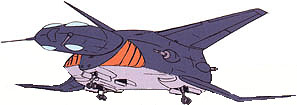

| Don Escargot |
|
|  | |
General and Technical Data |
|
|
Unit type: anti-submarine warfare gunship Operator: Earth Federation Fixed armaments: 4 x 25mm antiaircraft machinegun turret; 2 x 50mm cannon; depth charges, torpedoes, sonar bouies, etc |
|
| Technical and Historical Notes | |
|
Anti-submarine warfare has always been a testy subject in warfare; it requires skill, a high reaction time, and exceptional technology. In an era of mobile suits, some of which are fully amphibious, this is no exception.
Though it seemed unlikely (at the time) that the Earth Federation would ever be involved in a prolonged war with an enemy posessing submarines, their engineers wisely pushed ahead with the creation of a fresh new design to sink submarines. The Don Escargot (so named for its snail-like appearance) performed admirably in hunting and sinking submarine craft, and the Federal Navy commanders happily stuck dozens of the funny-shaped planes on their newly-refitted Himalaya-class aircraft carriers. Once the war got under way, the Don Escargot finally got the glory it was looking for. Though the Zeon's Jukon-class submarine is unquestionably the most advanced underwater combat vessel ever created, if a skilled Don Escargot crew can pick up its signature, it's entirely possible for the Jukon to be on the bottom of the ocean or in Federal hands by the next day. |
 RPG quick stats sheet
RPG quick stats sheet